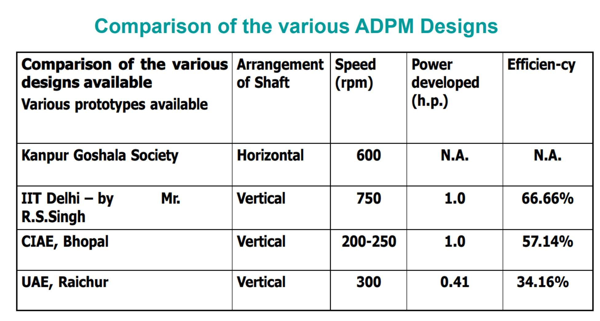

Project 1 - Green Energy
To convert modern India into advance India we need lots of power (Electricity).Today we are generating
electricity with help of nuclear plants, Coal, Dams, Fossil fuels, Oils etc. All of these mentioned items are
scarce in nature. Our ancestors had created lots of ways to produce energy.
We have created a model where we can produce electricity with the help of ox.
Model :-

This model was available before, but no one was able to create power of more then 1 KW so far. With out method we can produce electricity of 25 KW per hour from 1 unit.

With our technology we can bring the speed to 1500 rpm and power 25KW.
Formula:-
Centrifugal force = mrω2
ω2 = 2πN/Time
We can generate more electricity via this model through our game changer invention i.e
external flywheel which is a patent product of Mr Vivek Patel. Without this, it would be
still a dream.
This project is lead by Mr Vivek Patel, Mr Ram Sanjivan, Mr Sushil Chauhan and fully
supported by Greenkyari.
This is one of the dream projects of Greenkyari’s founder Mr Sushil Chauhan.
To create 1 unit of this model, we need
1. Alternator 25 KW
2. Invertor
3. 4 batteries (24 volt each)
4. Gear box (1500 RPM)
5. Fly Wheel (Patent)
6. 2 Ox
7. 2 Manpower
By utilizing this model, the govt can create revenue from cattle and generate profit. The
electricity which will be produced via this model can be used as both AC & DC . Also this
will help with ongoing crisis of electrity generation.